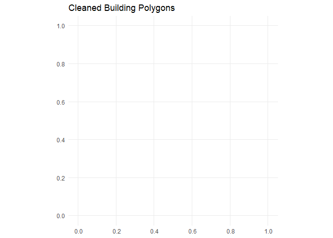
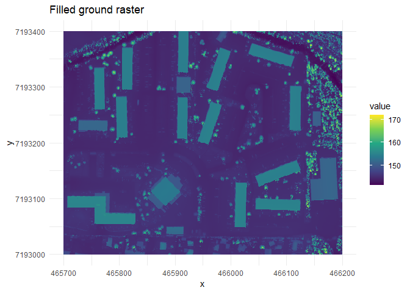
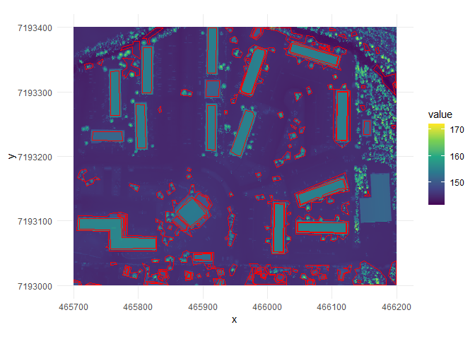

The goal of rasterpolygonizer is to …
Installation
You can install the development version of rasterpolygonizer like so:
# Install from GitHub
# install.packages("remotes")
#remotes::install_github("jashonnew/rasterpolygonizer")This package provides three main functions:
fill_ground_raster() – fills ground values in a raster.
extract_building_edges_to_polygons() – finds edge patches in a raster.
clean_building_polygons() – cleans and filters building polygons.
For a full example workflow using the included sample raster, see the package vignette:
#browseVignettes("rasterpolygonizer")Example
This is a basic example which shows you how to solve a common problem:
library(rasterpolygonizer)
library(terra)
#> Warning: package 'terra' was built under R version 4.4.3
#> terra 1.8.70
library(sf)
#> Warning: package 'sf' was built under R version 4.4.3
#> Linking to GEOS 3.13.0, GDAL 3.10.1, PROJ 9.5.1; sf_use_s2() is TRUE
library(ggplot2)
#> Warning: package 'ggplot2' was built under R version 4.4.3
r_path <- system.file("extdata", "sample_raster.tif", package = "rasterpolygonizer")
r <- terra::rast(r_path)
r_df_raw <- as.data.frame(r, xy = TRUE, na.rm = TRUE)
names(r_df_raw)[3] <- "value"
ggplot(r_df_raw) +
geom_raster(aes(x = x, y = y, fill = value)) +
coord_equal() +
scale_fill_viridis_c(na.value = "transparent") +
theme_minimal() +
labs(title = "Input raster")
r_filled <- fill_ground_raster(r)
r_df_filled <- as.data.frame(r_filled, xy = TRUE, na.rm = TRUE)
names(r_df_filled)[3] <- "value"
ggplot(r_df_filled) +
geom_raster(aes(x = x, y = y, fill = value)) +
coord_equal() +
scale_fill_viridis_c(na.value = "transparent") +
theme_minimal() +
labs(title = "Filled ground raster")
edges <- extract_building_edges_to_polygons(r_filled, thr_prob = .75)
# Use raster extent as mask for this example
mask_poly <- terra::as.polygons(r)
mask_sf <- sf::st_as_sf(mask_poly)
buildings_sf <- clean_building_polygons(
closed_edges = edges$closed_edges,
shrink_dist = -0.5,
simplify_tol = 2.5,
min_area = 19.99,
max_area = 2000
)
# Print summary
r_df <- as.data.frame(r_filled, xy = TRUE, na.rm = TRUE)
names(r_df)[3] <- "value"
ggplot() +
geom_raster(
data = r_df,
aes(x = x, y = y, fill = value)
) +
geom_sf(
data = buildings_sf,
fill = NA,
color = "red",
linewidth = 0.6
) +
coord_sf() +
scale_fill_viridis_c(na.value = "transparent") +
theme_minimal()
For detailed explanation and additional parameters, see the vignette.
The package includes a small example raster: inst/extdata/sample_raster.tif This is used for testing and demonstrating workflows.